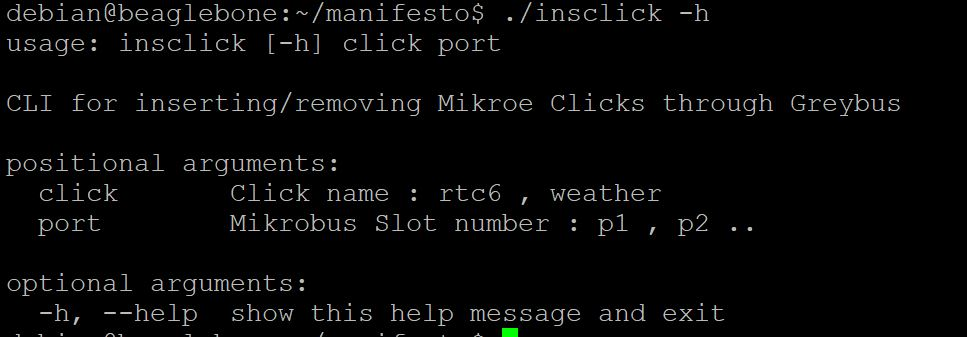
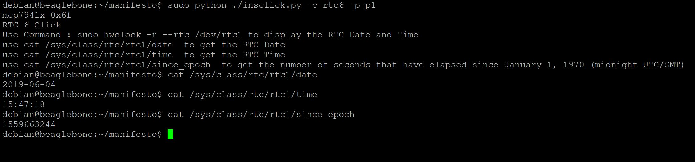
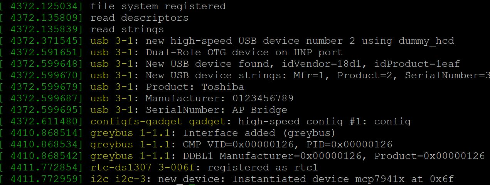

RTC 6 Click Support
This post contains the information about setting up and interfacing the MikroElektronika RTC 6 Click with PocketBeagle and Beaglebone Black, This post assumes that GBSIM is correctly installed and setup in your board.RTC6 click carries Microchip’s MCP79410 Real-Time Clock/Calendar IC with built-in 64 bytes of battery-backed SRAM an additional 1 Kbit of EEPROM.RTC6 click tracks hours, minutes, seconds, days, months, years and weekdays, with leap year compensation until the year 2399
Start GBSIM
Before inserting the click manifest start gbsim wither using the start script or by separately modprobe the modules and running gbsim.
sudo sh startgbsim.shInsert the Click Manifest using the CLI
Clone and setup the insclick CLI along with the manifesto tool and create the manifest blobs
git clone https://github.com/vaishnav98/manifesto.git
cd manifesto
./manifesto -o manifests/i2c1.mnfb manifests/i2c1.mnfs
./manifesto -o manifests/i2c2.mnfb manifests/i2c2.mnfsNow Connect the Click Board to the corresponding slot and then using the insclick CLI the click can be easily interfaced
sudo python ./insclick rtc6 p1The Command Line Utility Usage is :
Here the argument `port` corresponds to the slot in which the click is connected , the PocketBeagle Mikrobus position 1 and Beaglebone Mikrobus Cape Position 1 corresponds to p1,
the PocketBeagle Mikrobus position 2 and Beaglebone Mikrobus Cape Position 2 corresponds to p2, p3 and p4 corresponds to the slots 3 and 4 in the Beaglebone Mikrobus Cape
The CLI also supports g1 and g2 slots which corresponds to the I2C and UART grove ports on the Seedstudio Beaglebone Green.
The argument `click` corresponds to the click name , for example `rtc6` `weather` etc.
Output
The output of the Command Line Interface should be similar to this:
 The dmesg log output should be similar to this: A new device will be created at /sys/class/rtc1 if the click was loaded correctly, the date, time and seconds since epoch can be read using the following commands:
use cat /sys/class/rtc/rtc1/date ;to get the RTC Date
cat /sys/class/rtc/rtc1/time ;to get the RTC Time
cat /sys/class/rtc/rtc1/since_epoch ;to get the number of seconds that have elapsed since January 1, 1970 (midnight UTC/GMT)